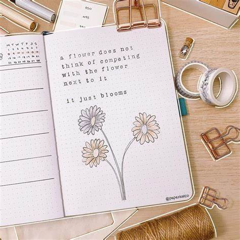
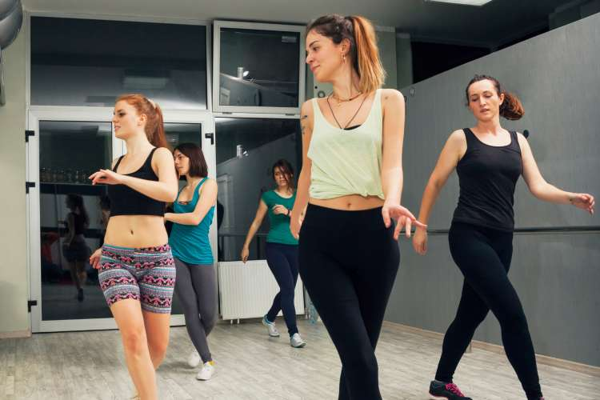
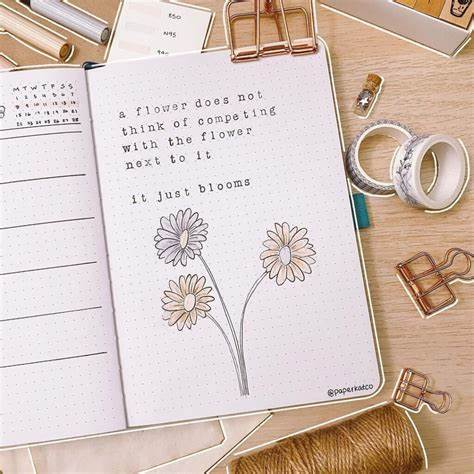
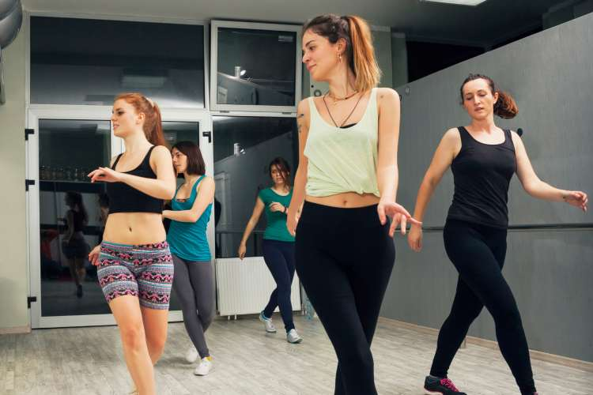

En este sitio web encontrarás información sobre mis aficiones.
Mi nombre es Marisol Zamudio y estas son algunas de las cosas que me gustan hacer en mis tiempos libres.
- Ver películas
- Bailar
- BulletJournal
Aquí es dónde me inspiro
 En este sitio web encontrarás información sobre mis aficiones.
Mi nombre es Marisol Zamudio y estas son algunas de las cosas que me gustan hacer en mis tiempos libres.
Aquí es dónde me inspiro
 